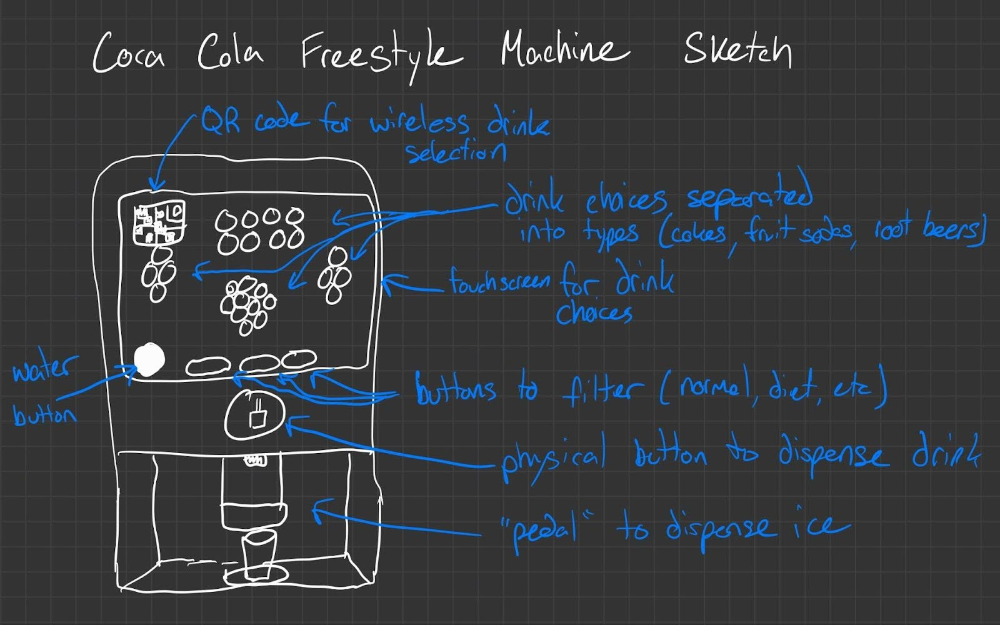
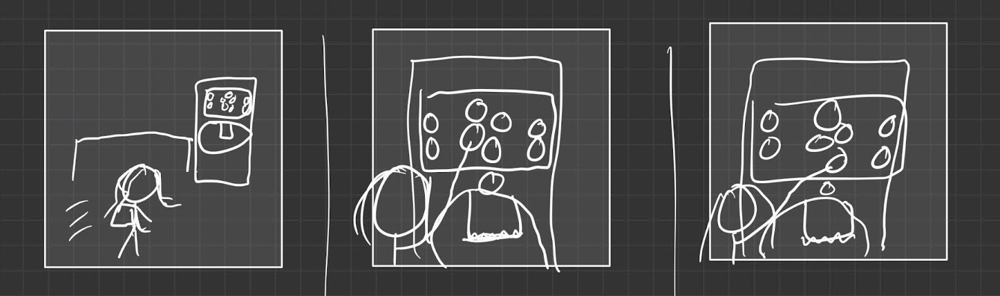
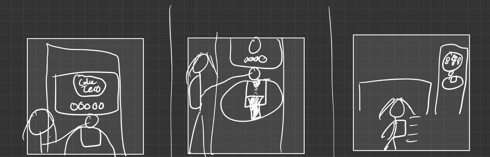

The Freestyle machine has a single spout that can dispense hundreds of
drink options.
Choose a base drink and add any flavor, press the dispense button, and
a custom drink pours out from the spout.

I wanted to see what students had to say about this machine. Each of
the following were observed during their use and approached afterwards
to answer some questions. These were the takeaways from each
discussion.
Person 1
Observations: Approached the machine quickly. Had
to hit the 'back' button multiple times. Chose Barq’s Root Beer Zero
with no flavors. Made decisions quickly and used the ice dispenser.
Interview Insights: Found the process very clear
and user-friendly, even for first-timers. Uses the machine
regularly, likes the organized flavor options, never used the QR
code, enjoys seasonal drinks.
Summary: Likes a quick and efficient interaction,
with minor issues on responsiveness.
Person 2
Observations: Waited in line, chose Powerade with
lemon-lime flavor quickly, had unresponsive 'back' button issues.
Interview Insights: Machine usage is very easy,
frequent use after practice for their sport, focused mainly on
Powerade, didn't know about the QR code feature.
Summary: Mainly uses the machine for hydration
needs, wants quick access and options over other features.
Person 3
Observations: Took time deciding, chose Coke with
vanilla, had issues with 'back' button.
Interview Insights: Finds the machine intuitive and
easy, uses occasionally, appreciates the well-organized and
informative screens, didn't know about the QR code.
Summary: Enjoys creating custom drinks leisurely,
likes the machine's variety and ease of use but faces slight
frustrations with screen responsiveness.
Healthy Hailey
Healthy Hailey is a college athlete who wants to get a quick drink
either before or after practice. If before, she wants a caffeinated
drink with no calories, and if after she wants an electrolyte drink
that is hydrating.
| Thinks |
"I don’t want too many cals in my drink. Maybe this has a
healthier alternative. Will people judge me for this drink?"
|
| Feels |
Tired from classes and practices, rushed because of limited free
time, behind on work due to diverse focus.
|
| Says |
"I wonder if there are any cals in this?", "Ah they don’t have my
favorite flavor", "Sorry I can’t talk, I’m gonna be late to
class."
|
| Does |
Try to multitask by eating and doing work in the dining hall,
double-checks to make sure she got the diet or zero cal version,
tries to get a drink before class.
|
The personas are similar, they are both college students having a
meal, but their wants are different.
Hailey is someone on the go with no time to spare, while Carl is
someone looking for a more relaxed meal experience.

After practice Hailey rushes to the dining hall to get something
quick before she is late for a lab.
She quickly pushes the button to filter to just the low calorie
drinks and picks a caffeinated drink
She then is able to quickly make a decision since all her options
are laid out in front of her conveniently

She decides she does not need any flavorings
She gets her drink by using the one spout
As quick as she came she leaves in a hurry to get to where she needs
to be on time